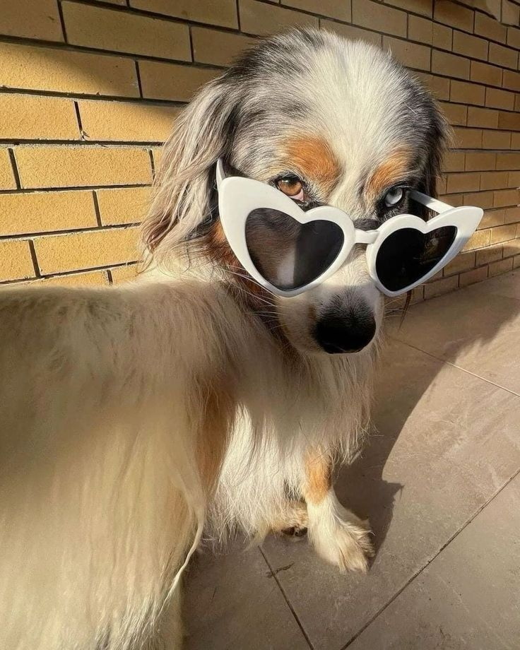

Тут ви знайдете цікаву інформацію про догляд та увагу до своїх хвостатиків.
І ми залюбки відповімо на всі питання!
| Песики | Котики | Папуги | Хвостаті |
|---|---|---|---|
|  | |
|
|
| Дізнатися про песиків | Дізнатися про котиків | Дізнатися про папуг | Відвідати сайт про тварин |
| Собаки - найвірніші друзі | Коти - незалежні та граційні | Папуги - веселі та яскраві | Всі тварини заслуговують на любов |